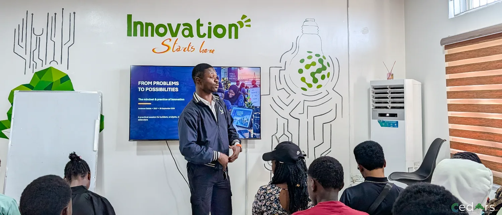
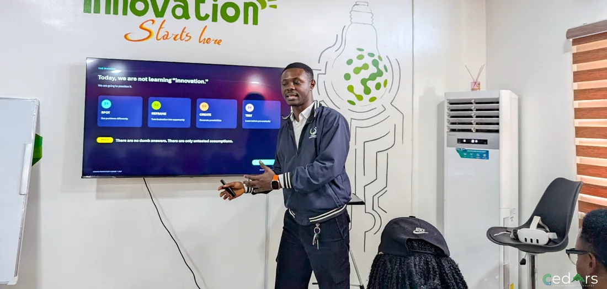
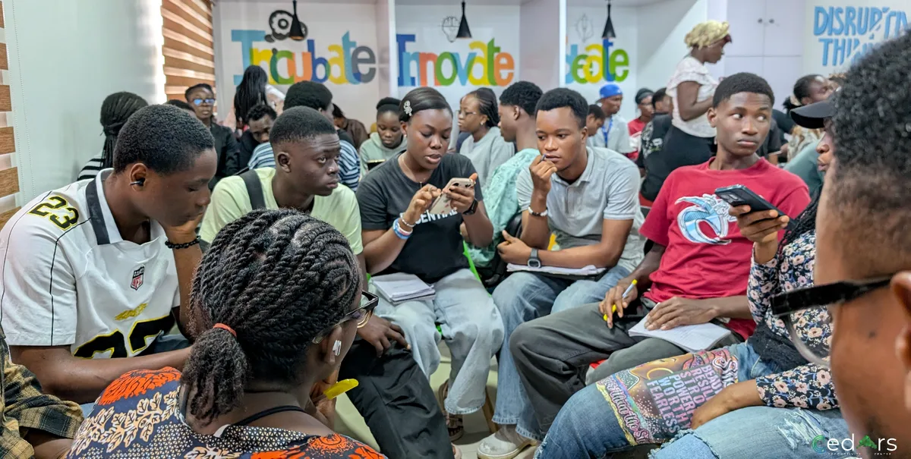
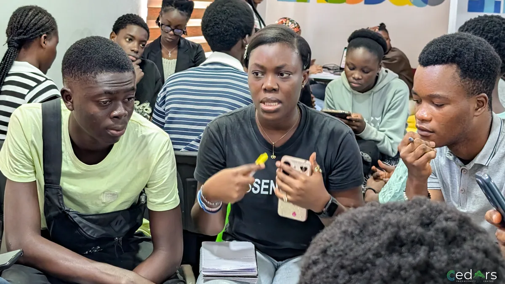
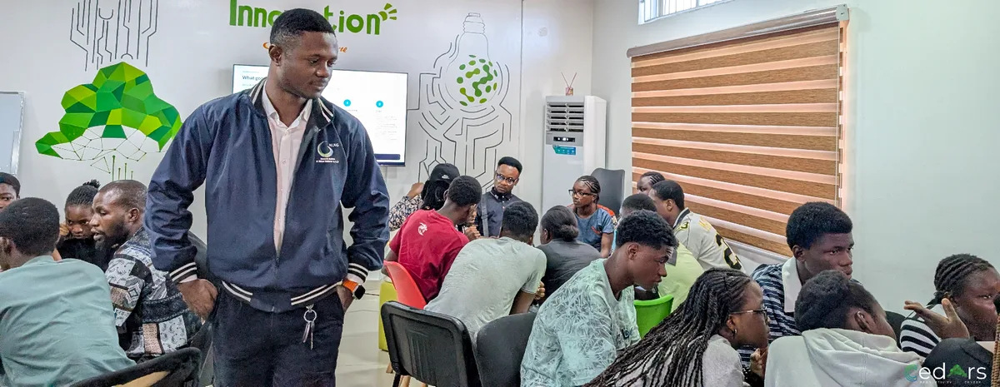

Turning ideas into testable products
Ideas are easy. Building something people come back to is the hard part.
Read takeaways →
Example article
APPLICATIONS ARE CURRENTLY CLOSED
12 WEEKS · BONNY ISLAND
NO COST TO SELECTED PARTICIPANTS
MENTOR-LED · PROJECT-BASED
EIGHT TRACKS TO CHOOSE FROM
DELIVERED BY CEDARS PRODUCTIVITY CENTRE
Innovation starts with who has the problem, not with the technology.

Emmanuel Ambrose Bida opened with a quiz. Which question best starts innovation? Is it which technology is trending, how to make something look impressive, or who experiences the problem and why? Most hands went up for the last option. That was the right answer.
He used smoking to explain why. Before you decide smokers need rehab, ask why they started smoking in the first place. Not everybody smokes. So what makes these people different?
Those are the kind of questions you ask in innovation.
Start with who has the problem.
Not which technology is trending, and not how to make something look impressive.
Treat the cause, not the symptom.
“No usage” is a symptom. Ask why, then look for patterns in who, when and how often.
Change the question before the system.
Ask what is happening that a solution might improve, rather than what to build.
His second quiz offered three options: building a new app because the technology is cool, buying a robot to demo, or redesigning a frustrating process so people can complete it in half the time. Only the redesign counted.
Innovation is a useful, new, improved way of creating value.
It doesn’t have to be a cure for cancer. And being first is interesting, but it’s not enough. Sometimes you try it and find out why nobody has.
Innovation also continues after launch, while people are using the product. He pointed to WhatsApp. Shared videos used to lose quality, and that is getting better because the company keeps improving the experience.

Problem discovery is usually the first step, and it rarely goes in a straight line. Ambrose warned against solving the tip of the iceberg. Say you build a tool and nobody uses it. “No usage” is a symptom, and printing flyers for adverts only treats the symptom. Ask why people aren’t using it. Then look for patterns in who uses it most, when they use it and how often.
You also need other people to check what you find. Negative feedback is the most useful kind. If you hate a restaurant’s food and walk away without a word, you haven’t helped the restaurant. Feedback is optional, so when someone gives it, treat it as data to learn from, not an attack.
Next, he asked which problem statement gave the best starting point:
The third points to a root cause. The last jumps straight to a solution, a temptation he said innovators face all the time.
Good innovators change the question before changing the system.
For example, instead of “Let’s build an app”, ask what is happening that an app might improve. If people abandon a process halfway, find out what makes them drop off. Is it time, trust, complexity or cost?

Problem statements are standard practice in industry. Before any initiative goes ahead, someone will ask for one. A strong statement names:
“We need an app to improve transport” is weak. Compare it with this: “Commuters trying to reach work on time can’t rely on when the bus will arrive because schedule information is fragmented, leading to lateness and disappointment.”
Even the strong version doesn’t mean you need an app. It’s where root cause analysis begins.

Ambrose described these as “not personality traits, behaviours you can practise”:
Courage matters because pushback is common. You can test an idea with friends and community, present it to stakeholders and still watch them say no.
Ambrose linked this to leadership. Priorities differ at every level. What matters to a managing director isn’t what matters to a general manager, and their KPIs are different. You may present a project to your manager, and the answer could simply be “we cannot prioritise it at the moment”. Some leaders won’t tell you that the real reason is money.

Notice: what problem am I about to solve without asking who actually has it?
Choose: what is the smallest way I could test the idea this week?
Act: write the problem statement, naming who is affected, what they struggle to do, the root cause and the impact.
At your next check-in, ask: did I change the question, or only the system?
So don’t wait for the perfect answer. Ask what the smallest way to test your idea is. “Done is better than perfect,” he said, and that doesn’t mean settling for mediocrity.
Ideas are easy. Building something people come back to is the hard part.